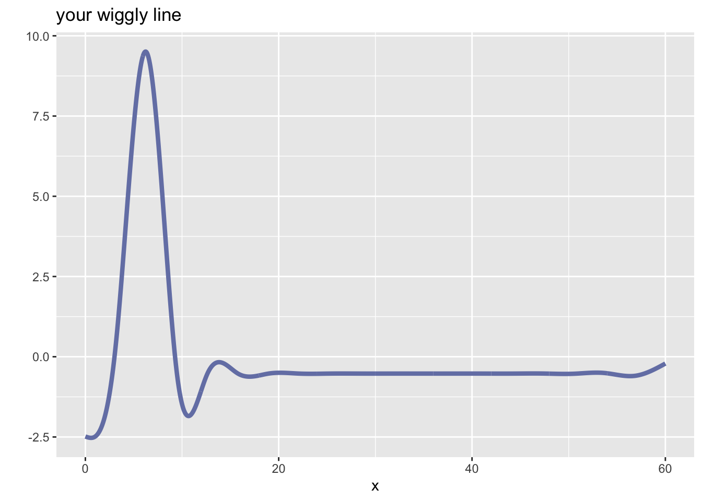
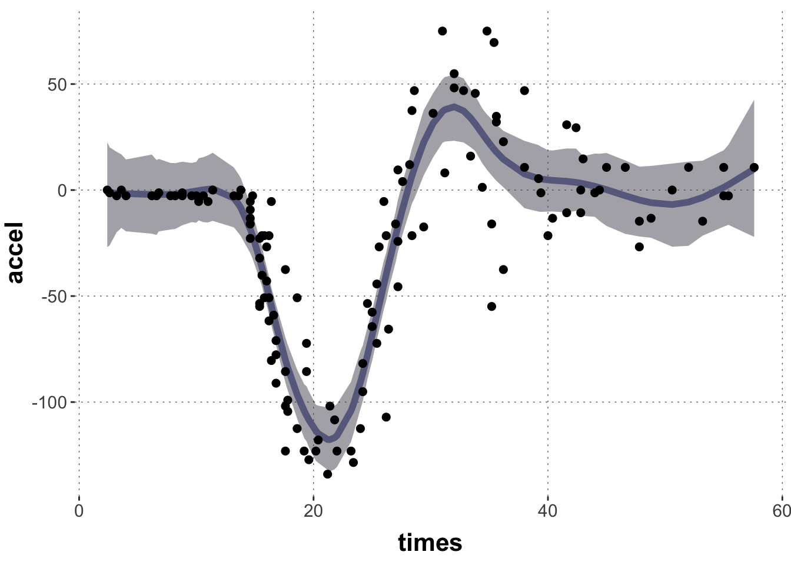
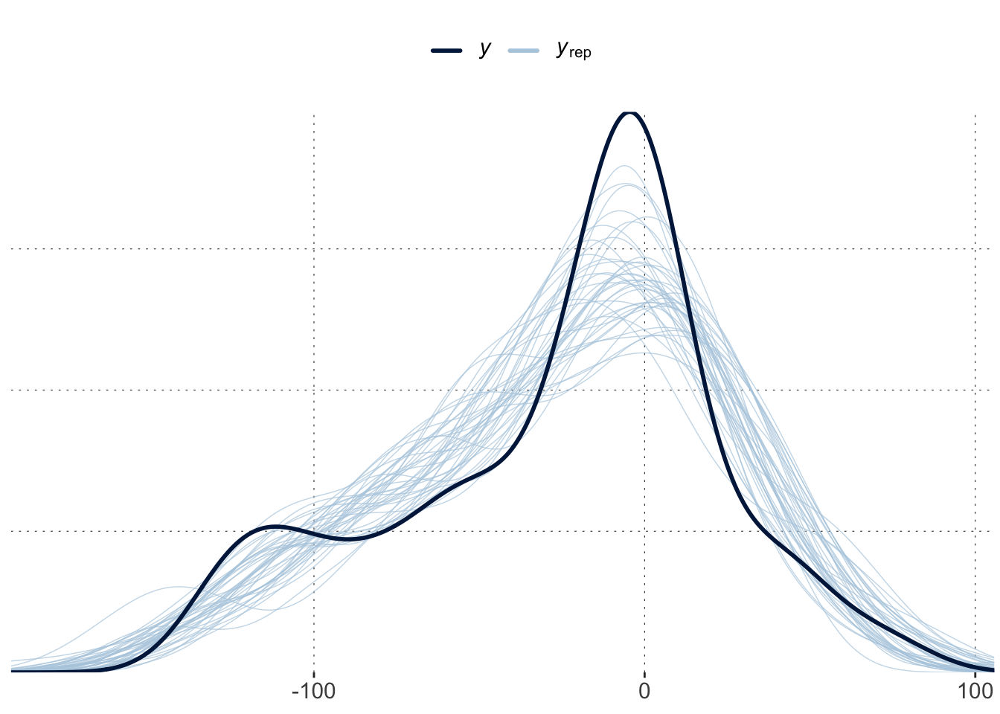

This tutorial provides both a conceptual and a practical introduction to fitting generalized additive models (GAMs) in brms. GAMs approximate wiggly curves by “smoothed splines”. The central idea to internalize here is that we can think of smoothed splines as a random effect. This is, indeed, how brms deals with GAMs.
Here is code to load (and if necessary, install) required packages, and to set some global options (for plotting and efficient fitting of Bayesian models).
Toggle code
# install packages from CRAN (unless installed)pckgs_needed <-c("tidyverse","brms","rstan","rstanarm","remotes","tidybayes","bridgesampling","shinystan","mgcv")pckgs_installed <-installed.packages()[,"Package"]pckgs_2_install <- pckgs_needed[!(pckgs_needed %in% pckgs_installed)]if(length(pckgs_2_install)) {install.packages(pckgs_2_install)} # install additional packages from GitHub (unless installed)if (!"aida"%in% pckgs_installed) { remotes::install_github("michael-franke/aida-package")}if (!"faintr"%in% pckgs_installed) { remotes::install_github("michael-franke/faintr")}if (!"cspplot"%in% pckgs_installed) { remotes::install_github("CogSciPrag/cspplot")}# load the required packagesx <-lapply(pckgs_needed, library, character.only =TRUE)library(aida)library(faintr)library(cspplot)# these options help Stan run fasteroptions(mc.cores = parallel::detectCores())# use the CSP-theme for plottingtheme_set(theme_csp())# global color scheme from CSPproject_colors = cspplot::list_colors() |>pull(hex)# names(project_colors) <- cspplot::list_colors() |> pull(name)# setting theme colors globallyscale_colour_discrete <-function(...) {scale_colour_manual(..., values = project_colors)}scale_fill_discrete <-function(...) {scale_fill_manual(..., values = project_colors)}
Data set and mission statement
Let’s start with a common example for introductions to GAMs, the non-linear relationship between time (after impact) and acceleration (of the head of a motorcycle driver). The data is from the MASS package and it looks like this:
Toggle code
# motorcycle datadata_motor <- MASS::mcycle |>tibble() |>unique()# plot the datadata_motor |>ggplot(aes(x = times, y = accel)) +geom_smooth(color = project_colors[1]) +geom_point()
Notice that the plotting function geom_smooth already provides us with a smoothing line to fit the central tendency of this this “wiggly data”. But this one is not very good. We can probably do better.
The goals for the remainder of this tutorial are:
To understand how a wiggly curve can be constructed from a set of “atomic wiggles”.
To see the parallel between (i) fitting weights over “atomic wiggles”, with a penalty against excessive wiggliness, and fitting (ii) group-level effects.
To be able to run a Bayesian regression model with penalized smoothing splines using brms.
Wiggly curves as mixtures over “atomic wiggles”
Let’s play a game! It’s called “make a wiggle”. Here’s how it’s played: I give you a bunch of “atomic wiggles”, you adjust some weights, and out pops … TADA! … a smoothing spline.
Or, for those dull at heart, in technical terms, I give you a set of basis functions. This set is also called basis. Then you build intuitions about how, by adjusting numerical weights for the basis functions, we can flexibly approximate non-linear data.
The following code gives you a function get_basis() which takes as input a sequence of observations \(x\) for which we would like to construct a non-linear line. The output is a set of “atomic wiggles” (see plot below). The function also takes an integer value k as input, which is the number of “atomic wiggles” that you get.
Do not worry about the details of this function, better to directly look at its output. But if you must know: this function uses the gam function from the mgcv package to construct (indirectly, through the model matrix internally built up by mgcv::gam) k cubic regression splines. The brms package uses the function mgcv:s which is called here in the model formula as well (more on this below).
Toggle code
# create a set of /k/ splines for vector /x/get_basis <-function(x, k =20){# fit a dummy GAM fit_gam <- mgcv::gam(formula = y ~s(times, bs ="cr", k =20),data =tibble(y =1, times = x))# extract model matrix model_matrix <-model.matrix(fit_gam)# wrangle to long tibble some_curves <- model_matrix |>as_tibble() |>mutate(x = x) |>pivot_longer(cols =-x) |>mutate(name =str_replace(name, "s\\(times\\).", "curve_"))return(some_curves)}
Let’s construct a basis then and plot it:
Toggle code
n_x =1000x =seq(0,60, length.out = n_x)some_curves <-get_basis(x)# plot the basissome_curves |>ggplot(aes(x = x, y = value, color = name, group = name)) +geom_line(size=1.5) +scale_colour_manual(values =c(project_colors, project_colors)) +theme(legend.position="none") +ylab("") +ggtitle("your basis") +xlab("")
To play “make a wiggle” you also need a vector of weights, one for each basis function. Here is a function which, given a weight vector, computes the weighted average over all basis functions for a smooth prediction.
weights <-c(1,rep(0, times =19))make_a_wiggle(some_curves, weights)

Exercise 1: Try a manual fit
Play around with weights and try to find a constellation that approximates the shape of the motorcycle data in data_motor that we plotted above.
Penalizing wiggliness and group-level effects
We saw how a vector of weights allows us to approximate non-linear relationship, once we have a set of elementary basis functions. To fit a non-linear regression model, the data should inform us about which vector of weights to use. So, essentially, we can just use the basis functions as linear predictors. There’s a lot of them, so that’s going to be ugly, but let’s do it:
That looks like it’s on the right track, but it’s not wiggly enough.
Exercise 2: Increasing smoothness of the predictor
What could we do to make the linear predictor more curvy?
Solution
The bigger the fixed effect coefficients, the more the basis functions can affect the linear predictor. Currently, there are rather strong priors on the coefficients (A Gaussian with standard deviation 10). If we make these priors wider, we should see a much more curvy fit.
By adjusting weights of basis functions, we can get smoothed curves.
These weights can be learned from the data (visual results look good).
BUT: the degree of smoothness is determined by the prior on coefficients.
The latter problem is worrisome because we do not want to manually adjust an important parameter like that. Ideally, the smoothness of the curve should be dictated by the data itself. Otherwise, we might overfit or remain too linear, so to speak.
Notice that the parameter to tweak is the standard deviation of the normal distribution of the prior over coefficients. The smaller this is, the more linear a curve we predict. The bigger the more smoothed the fit. So, we want a model that let’s the data decide what the standard deviation is supposed to be for additive offsets to what is otherwise a vanilla regression model. But, hey, that’s exactly what group-level effects do, too!
Concretely, we want a predictor \(\eta\) which consists of the usual linear regression part \(X \beta\) with an additional part \(Z b\), which specifies how much to deviate from the vanilla linear prediction. In the case at hand, the matrix \(Z\) is, essentially, the basis (rows are for each observation of times, columns correspond to the basis functions). We also want the coefficient’s \(b\) to be close to zero but with unknown variance, which is to be inferred from the data. The overal structure of this model is therefore:
\[
\begin{align*}
\eta &= X \beta + Z b \\
b & \sim \mathcal{N}(o, \sigma_b) \\
\sigma_b & \sim \dots \text{some prior} \dots
\end{align*}
\] And that is exactly the structure of a group-level / random-effects model. Random effects are supposed to be small, where what counts as small enough is to be determined by the data. Likewise, weights of basis functions are suppose to be small and, likewise, what counts as small is not to be fixed by hand but governed by the needs of the data. (Here we are again: we should think of group-level effects as putting up an (elastic) fence and letting the sheep graze where they want; a gentle anything-goes within a flexible margin.)
Indeed, brms implements GAMs as, essentially, multi-level models, even though the touch-and-feel maybe different.
Implementing GAMs in brms
To run a basic GAM in brms, just wrap the predictor to be smoothed in s(), which is brms-wrapper around the mgcv function of the same name.
Here is the posterior linear predictor for this model, which looks fine:
Toggle code
plot_post_linPred(fit_motor, data_motor)

It is interesting to interpret the summary:
Toggle code
# interpret thissummary(fit_motor)
Family: gaussian
Links: mu = identity; sigma = identity
Formula: accel ~ s(times, bs = "cr", k = 20)
Data: data_motor (Number of observations: 132)
Draws: 4 chains, each with iter = 2000; warmup = 1000; thin = 1;
total post-warmup draws = 4000
Smooth Terms:
Estimate Est.Error l-95% CI u-95% CI Rhat Bulk_ESS Tail_ESS
sds(stimes_1) 4.89 1.18 3.09 7.67 1.00 927 1389
Population-Level Effects:
Estimate Est.Error l-95% CI u-95% CI Rhat Bulk_ESS Tail_ESS
Intercept -25.64 2.01 -29.56 -21.66 1.00 3953 2779
stimes_1 1.65 0.33 0.98 2.30 1.00 3619 3194
Family Specific Parameters:
Estimate Est.Error l-95% CI u-95% CI Rhat Bulk_ESS Tail_ESS
sigma 22.86 1.49 20.12 25.96 1.00 3121 2722
Draws were sampled using sampling(NUTS). For each parameter, Bulk_ESS
and Tail_ESS are effective sample size measures, and Rhat is the potential
scale reduction factor on split chains (at convergence, Rhat = 1).
The “Smooth Term” sds(stimes_1) is essentially the standard deviation \(\sigma\) in the equations above. (The “sigma” is the usual standard deviation of the Gaussian likelihood function.) The intercept is the usual intercept, and the term “stimes_1” is the normal linear regressions slope. But these are so distorted by the penalized smooths in which they are wrapped that is is not prudent to draw strong conclusions from them (in my understanding; though I am not certain for it).
Exercises
Exercise 3: Posterior predictives
The previous plot showed ribbons for the 95% HDI for the linear predictor. Make a similar plot for the posterior predictive distribution. Before you code, think about how you expect the plot to differ from the previous one (different curve, more / less uncertainty …).
Solution
We expect the central tendency to be similar (albeit a bit more noisy, given sampling inaccuracy), but most of all the ribbons will be broader, given that we quantify uncertaint about where the data points would fall, not about where the central tendency is.
Consult visual posterior predictive checks for the GAM. Does it look alright? Anything systematicaly amiss?
Solution
A simple PPC suggests that the overall distribution of the data is not matched. This could be due to the large uncertainty for early time points, which is not borne out by the data. This explains why the PPCs are flatter, less pronounced.
Toggle code
pp_check(fit_motor, ndraws =40)

Exercise 5: A distributional GAM
Given the problem above, it makes sense to try a distributional model, regressing the “sigma” parameter of the likelihood function on times. Decide whether it’s better to plot the posterior for the linear predictor or the posterior predictives. Interpret what you see.
We should consult the posterior predictive because that is where the difference in spread around the linear predictor will show, not in the estimates of the linear predictor.
We see a tighter credible interval for early time points, but the change to the non-distributional model is not very large.
Exercise 6: A GAM for World Temperature
Run a Bayesian GAM for the World Temperature data (aida::data_WorldTemp). Plot the expected posterior predictor of central tendency together with the data. Can you use information from the posterior over model parameters to address the question of whether there is a trend towards higher measurements as time progresses? Compare the conclusions you draw from this linear model to those you would draw from a naive linear model.
The population-level slope parameter represents the unsmoothed linear predictor line for the splines model, but it is difficult to interpret (because we have to strip off the smoothing splines, so to speak). There seems to be an indication of a positive linear effect underneath the smooth, but I, personally, would not base firm conclusions on this.
replace talk of “linear predictor” with central tendency